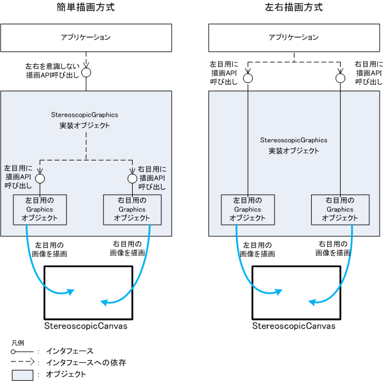

|
|||||||||
| 前のクラス 次のクラス | フレームあり フレームなし | ||||||||
| 概要: 入れ子 | フィールド | コンストラクタ | メソッド | 詳細: フィールド | コンストラクタ | メソッド | ||||||||
public interface StereoscopicGraphics
ステレオ表示用グラフィックスを提供するインタフェースです。
StereoscopicCanvas.init(Graphics)、
StereoscopicCanvas.paint(Graphics)、
StereoscopicCanvas.getGraphics()
および getRawGraphics(int) で渡される
Graphics オブジェクトによって、
2D/3D 描画をステレオ表示することが可能です。
Graphics オブジェクト生成時には、setDepth(int) の引数 depth に 0 が設定された状態、
set3dPerspectiveOffset(float, float) の引数
offset、range、にそれぞれ 0、Float.MAX_VALUE が設定された状態です。
StereoscopicCanvas.init(Graphics)、
StereoscopicCanvas.paint(Graphics)
および StereoscopicCanvas.getGraphics()
で渡される
Graphics オブジェクトは、左目用の画像を描画する Graphics オブジェクトと、
右目用の画像を描画する Graphics オブジェクトを内部的に保持しています。
StereoscopicCanvas に実際にステレオ表示の描画を行うのは、
これらの内部的な 2 つの Graphics オブジェクトです。
アプリケーションがステレオ表示の描画を行うには、次の 2 つの方式があります。
StereoscopicGraphics は「奥行き」という概念を持っています。 アプリケーションプログラマは、どの奥行きのレイヤに対して描画を行うのかを指定した上で、 この StereoscopicGraphics を実装する Graphics オブジェクトの描画メソッドを呼び出し、 左右を考慮しないで描画します。
Java 実行環境は、指定された奥行きを反映した左目用の画像と右目用の画像を算出し、 内部的に左目用の Graphics と右目用の Graphics オブジェクトの描画メソッドを呼び出して描画を行います。
アプリケーションプログラマは、 この StereoscopicGraphics を実装する Graphics オブジェクトが内部的に保持している左目用の Graphics オブジェクトと右目用の Graphics オブジェクトを取得します。 アプリケーションプログラマが画面の奥行きも考慮して、 左右それぞれの Graphics オブジェクトの描画メソッドを直接呼び出し描画を行います。

これらの方式のメソッドの呼び出し順序は以下になります。
setDepth(int) 奥行きの指定
set3dPerspectiveOffset(float, float)： 奥行きを発生させるために視点を左右にずらす値の設定
getRawGraphics(int)： 内部的に保持している左目用/右目用の画像を描画するGraphics オブジェクトを取得する
getRawGraphics(int)で取得したGraphics オブジェクトの描画メソッド
これらの方式は混在させて使用できます。 例えば、 2D 描画は簡単描画方式でおこない、3D 描画は左右描画方式で行う使い方が可能です。 また、2D 描画内でも、背景・オブジェクト・ウインドウの奥行き設定のあるものは簡単描画方式で行い、 イメージ等の前後(奥行き)関係を把握して描画する必要があるものは左右描画方式で細かく行う等の使い方も可能です。
3D 描画機能利用の注意事項については、
com.docomostar.opt.ui.stereoscope を参照してください。
2D描画では、setDepth(int) で描画したい奥行きを設定してから
Graphics の描画メソッドを呼び出すと、Java 実行環境側で、描画の x座標に、
奥行きに対応する視差オフセットを加えて、左右のオフスクリーンに描画します。
この方法による描画では、アプリは奥行きのみ意識して、ステレオ表示のための
左右については意識することなく描画できます。
オフスクリーンへの描画時に視差オフセットが加えられることにより、
ステレオ表示中の立体視において左右に描画をしていない領域が出てくる可能性があります。
未描画領域にならないように、setDepth(int) で設定した奥行きに応じた視差オフセット量だけ、
描画範囲が左右に広くなっているものと見なして描画するようにしてください。
奥行きに対応する視差オフセットは、
StereoScope.getParallaxOffset(int) で取得する値で確認できます。
なお、アプリがハードウェアで拡大表示されるケースでも
簡単描画方式の 2D 描画で使用される奥行きに対応する視差オフセット値として、
StereoScope.getParallaxOffset(int) で取得する値と同じ値が設定されます。
つまり、拡大表示されるケースでは、実際の視差オフセット値を拡大値で割った値が使用されます。
3D描画では、com.docomostar.opt.ui.eruption パッケージを使用して左右を意識せずに描画します。
この場合は、このインターフェースで定義しているメソッドの呼び出しは行いません。
eruptionパッケージは、GraphicsEruption.beginEruption() メソッド実行後、 GraphicsEruption.endEruption() メソッドが呼ばれるまでの期間で使用可能です。
3D描画では、com.docomostar.opt.ui.eruption パッケージを使用しない場合、 視点を左右にずらして左右のオフスクリーンに描画することで視差を発生させてステレオ表示します。 アプリは「視点の x 座標のオフセット」「左右視線の交点までの焦点距離(左右にずらす前の視点位置から、立体視の対象とする物体までの距離)」を設定して 3D 描画のメソッドを呼び出すと、 Java 実行環境側でこの値から視線方向のベクトルを求めて、これにより視点を左右にずらして 3D 描画を行います。
具体的には、
まず、以下のそれぞれのオフセット値が、アプリの意図した対応関係になるように、
x 座標の右目用オフセットと焦点距離を
set3dPerspectiveOffset(float, float) で設定します。
StereoScope.getParallaxOffset(int) で取得できるステレオ表示の各奥行きに対応する視差オフセット値
次に、com.docomostar.ui.graphics3d または com.docomostar.opt.ui.j3d または com.docomostar.ui.ogl パッケージの API で描画を行うと、 Java 実行環境側で、視点座標変換において上記の設定値が加味され、左右のオフスクリーンに 3D 描画されます。
この方法による描画では、アプリは右目用の上記情報を設定し、 後はステレオ表示のための左右については意識することなく描画できます。
ステレオ表示をアプリで細かく制御するために、StereoscopicGraphics には、
右目用、左目用の Graphics オブジェクトを取得する、getRawGraphics(int) が用意されています。
StereoScope.getParallaxOffset(int) で、描画したい奥行きに対応する視差オフセットを取得します。
2D/3D 描画の、描画位置、視点位置をアプリで計算して、左右それぞれの Graphics オブジェクトに
2D/3D 描画します。
この方法による描画では、アプリはステレオ表示のための左右を意識して描画する必要があります。
getRawGraphics(int) で取得した右目用、左目用の Graphics オブジェクトで描画するケースで、
ちらつきを抑えるため、右目用・左目用の描画を一度に実画面に描画する場合は、
StereoscopicGraphics を実装した Graphics オブジェクトの Graphics.lock() および
Graphics.unlock(boolean)
メソッドによるダブルバッファリングを行います。
このメソッドは、getRawGraphics(int) によって、取得した左右グラフィックオブジェクトの描画を
含めたダブルバッファリングを行います。
StereoscopicCanvas から取得する Graphics オブジェクトは、左目用の画像を描画する Graphics オブジェクトと、
右目用の画像を描画する Graphics オブジェクトを内部的に保持しています。
そのため、 Graphics からデータを取得する各メソッドは、どの Graphics オブジェクトから実行されたかに応じて、以下の表のように振る舞います。
StereoscopicCanvas から取得する Graphics オブジェクトは簡単描画方式用のオブジェクトであるため、 描画メソッドを呼び出すと、右目用画像および左目用画像の両方に描画が行われます。
ピクセル値を取得し、そのピクセル値を右目用画像または左目用画像に反映させたい場合は、 簡単描画方式用の Graphics オブジェクトではなく、左右描画方式用のgetRawGraphics(int)
で取得する右目用または左目用の Graphics オブジェクトの各メソッドを利用してください。
| メソッド | StereoscopicCanvas から取得する Graphics オブジェクト |
getRawGraphics(RIGHT_SIDE) で取得した右目用の Graphics オブジェクト | getRawGraphics(LEFT_SIDE) で取得した左目用の Graphics オブジェクト |
|---|---|---|---|
ピクセル取得メソッド(例: Graphics.getPixel(int, int))
|
|
|
|
Graphics.copyArea(int, int, int, int, int, int)
|
|
|
|
Graphics2.getImage(int, int, int, int)
|
|
|
|
| メソッド | StereoscopicCanvas |
|---|---|
ImageEncoder.encode(Canvas, int, int, int, int)
|
|
簡単描画方式による 2D 描画の例[1]
(解像度比が 2 である場合)
setDepth(int) によって、表示したい奥行きを設定する。
UserCanvas extends StereoscopicCanvas {
public void paint( Graphics g ) {
StereoscopicGraphics sg = (StereoscopicGraphics)g;
sg.setDepth( StereoScope.STEREOSCOPIC_DEPTH_MIN ); //一番奥に描画
g.drawImage( ... ); // 描画はgetHeight(DrawAreaの縦) x getWidth(DrawAreaの横/2)の範囲
sg.setDepth( StereoScope.STEREOSCOPIC_DEPTH_MAX ); //一番手前に描画
g.drawImage( ... ); // 描画はgetHeight(DrawAreaの縦) x getWidth(DrawAreaの横/2)の範囲
}
}
Display.setCurrent(new UserCanvas());
簡単描画方式による 2D 描画の例[2]
UserCanvas extends StereoscopicCanvas {
public UserCanvas() {
super(true);
}
public void paint( Graphics g ) {
StereoscopicGraphics sg = (StereoscopicGraphics)g;
sg.setDepth( StereoScope.STEREOSCOPIC_DEPTH_MIN ); //一番奥に描画
g.drawImage( ... ); // 描画はgetHeight(DrawAreaの縦) x getWidth(DrawAreaの横)の範囲
sg.setDepth( StereoScope.STEREOSCOPIC_DEPTH_MAX ); //一番手前に描画
g.drawImage( ... ); // 描画はgetHeight(DrawAreaの縦) x getWidth(DrawAreaの横)の範囲
}
}
Display.setCurrent(new UserCanvas());
簡単描画方式による 3D 描画の例(com.docomostar.opt.ui.eruption パッケージを使用)
GraphicsEruption.beginEruption() を呼び出す。
GraphicsEruption.endEruption() を呼び出す。
UserCanvas extends StereoscopicCanvas {
public void paint( Graphics g ) {
GraphicsEruption gerp = (GraphicsEruption)g;
gerp.beginEruption();
[com.docomostar.opt.ui.eruption パッケージの描画方法に従って描画]
gerp.endEruption();
}
}
Display.setCurrent(new UserCanvas());
簡単描画方式による 3D 描画の例[1]
StereoScope.getParallaxOffset(int) で、描画したい奥行きに対応する右目用の視差オフセットを取得する。
StereoScope.getResolutionRate() で除算し、解像度比にあった視差オフセットを得る。
set3dPerspectiveOffset(float, float) で設定する。
UserCanvas extends StereoscopicCanvas {
public void paint( Graphics g ) {
StereoscopicGraphics sg = (StereoscopicGraphics)g;
com.docomostar.ui.graphics3d.Graphics3D g3 = (com.docomostar.ui.graphics3d.Graphics3D)g;
int offset = StereoScope.getParallaxOffset(STEREOSCOPIC_DEPTH_MIN);
offset /= StereoScope.getResolutionRate();
float offset_r = [投影した3D描画の左右オフセットと視差offsetが適切な対応になるように左右視点をずらすための右目用 x座標のオフセットの値];
float range = [投影した3D描画の左右オフセットと視差offsetが適切な対応になるように左右視点をずらすための焦点距離の値];
sg.set3dPerspectiveOffset(offset_r,range);
[g3による3D描画処理] //一番奥に描画
}
}
Display.setCurrent(new UserCanvas());
簡単描画方式による 3D 描画の例[2]
UserCanvas extends StereoscopicCanvas {
public void paint( Graphics g ) {
StereoscopicGraphics sg = (StereoscopicGraphics)g;
com.docomostar.opt.ui.j3d.Graphics3D g3 = (com.docomostar.opt.ui.j3d.Graphics3D)g;
int offset = StereoScope.getParallaxOffset(STEREOSCOPIC_DEPTH_MIN);
offset /= StereoScope.getResolutionRate();
float offset_r = [投影した3D描画の左右オフセットと視差offsetが適切な対応になるように左右視点をずらすための右目用 x座標のオフセットの値];
float range = [投影した3D描画の左右オフセットと視差offsetが適切な対応になるように左右視点をずらすための焦点距離の値];
sg.set3dPerspectiveOffset(offset_r,range);
[g3による3D描画処理] //一番奥に描画
}
}
Display.setCurrent(new UserCanvas());
簡単描画方式による 3D 描画の例[3]
UserCanvas extends StereoscopicCanvas {
public void paint( Graphics g ) {
StereoscopicGraphics sg = (StereoscopicGraphics)g;
GraphicsOGL gogl = (GraphicsOGL)g;
int offset = StereoScope.getParallaxOffset(STEREOSCOPIC_DEPTH_MIN);
offset /= StereoScope.getResolutionRate();
float offset_r = [投影した3D描画の左右オフセットと視差offsetが適切な対応になるように左右視点をずらすための右目用 x座標のオフセットの値];
float range = [投影した3D描画の左右オフセットと視差offsetが適切な対応になるように左右視点をずらすための焦点距離の値];
sg.set3dPerspectiveOffset(offset_r,range);
[goglによる3D描画処理] //一番奥に描画
}
}
Display.setCurrent(new UserCanvas());
左右描画方式による 2D 描画の例
(解像度比が 2 である場合)
getRawGraphics(int) によって、右目用、左目用の Graphics オブジェクトを取得する。
StereoScope.getParallaxOffset(int) により、描画したい奥行きに対応する右の視差オフセットを取得する。
StereoScope.getResolutionRate() で除算し、解像度比にあった視差オフセットを得る。
Graphics.lock()、Graphics.unlock(boolean) メソッドを使用する。
UserCanvas extends StereoscopicCanvas {
public void paint( Graphics g ) {
StereoscopicGraphics sg = (StereoscopicGraphics)g;
Graphics rightg = sg.getRawGraphics(StereoscopicGraphics.RIGHT_SIDE);
Graphics leftg = sg.getRawGraphics(StereoscopicGraphics.LEFT_SIDE);
g.lock();
int offset = StereoScope.getParallaxOffset(STEREOSCOPIC_DEPTH_MIN);
offset /= StereoScope.getResolutionRate();
rightg.drawImage(x+offset,...); //右目用の描画処理(一番奥)
// 描画はgetHeight(DrawAreaの縦) x getWidth(DrawAreaの横/2)の範囲
leftg.drawImage(x+(-offset),...);//左目用の描画処理(一番奥)
// 描画はgetHeight(DrawAreaの縦) x getWidth(DrawAreaの横/2)の範囲
offset = StereoScope.getParallaxOffset(STEREOSCOPIC_DEPTH_MAX);
offset /= StereoScope.getResolutionRate();
rightg.drawImage(x+offset,...); //右目用の描画処理(一番手前)
// 描画はgetHeight(DrawAreaの縦) x getWidth(DrawAreaの横/2)の範囲
leftg.drawImage(x+(-offset),...);//左目用の描画処理(一番手前)
// 描画はgetHeight(DrawAreaの縦) x getWidth(DrawAreaの横/2)の範囲
g.unlock(false);
}
}
Display.setCurrent(new UserCanvas());
左右描画方式による 3D 描画の例
(解像度比が 2 である場合)
getRawGraphics(int) によって、右目用、左目用の Graphics オブジェクトを取得する。
StereoScope.getParallaxOffset(int) により、描画したい奥行きに対応する右目用の視差オフセットを取得する。
StereoScope.getResolutionRate() で除算し、解像度比にあった視差オフセットを得る。
Graphics.lock()、Graphics.unlock(boolean) メソッドを使用する。
UserCanvas extends StereoscopicCanvas {
public void paint( Graphics g ) {
StereoscopicGraphics sg = (StereoscopicGraphics)g;
Graphics3D rightg = (Graphics3D)sg.getRawGraphics(StereoscopicGraphics.RIGHT_SIDE);
Graphics3D leftg = (Graphics3D)sg.getRawGraphics(StereoscopicGraphics.LEFT_SIDE);
g.lock();
[3Dオブジェクトの生成など]
Transform tr_render = new Transform();
[レンダリング時の変換行列の設定]
int offset = StereoScope.getParallaxOffset(STEREOSCOPIC_DEPTH_MIN);
offset /= StereoScope.getResolutionRate();
float offset_r = [投影した3D描画の左右オフセットと視差offsetが適切な対応になるように左右視点をずらすための右目用 x座標のオフセットの値];
float offset_l = -offset_r;
float range = [投影した3D描画の左右オフセットと視差offsetが適切な対応になるように左右視点をずらすための焦点距離の値];
Vector3D pos_r = new Vector3D(offset_r,0,0);
Vector3D pos_l = new Vector3D(offset_l,0,0);
Vector3D look = new Vector3D(0,0,range);
Vector3D up = new Vector3D(0,-1,0);
Transform tr_r_offset = new Transform();
Transform tr_l_offset = new Transform();
tr_r_offset.lookAt(pos_r,look,up);
tr_l_offset.lookAt(pos_l,look,up);
Transform tr = new Transform();
tr.lookAt(new Vector3D(0, 0, 30), // pos
new Vector3D(0, 0, -30), // look
new Vector3D(0, 1, 0)); // up
Transform tr_r = new Transform(tr);
Transform tr_l = new Transform(tr);
tr_r_offset.multiply(tr_r); // 視点座標への変換行列を右目からの視点にずらした行列
tr_l_offset.multiply(tr_l); // 視点座標への変換行列を左目からの視点にずらした行列
rightg.setTransform(tr_r_offset); // 右目用の視点座標への変換行列設定
rightg.renderObject3D(obj,tr_render);//右目用の描画処理(一番奥)
// 描画はgetHeight(DrawAreaの縦) x getWidth(DrawAreaの横/2)の範囲
rightg.flushBuffer();
leftg.setTransform(tr_l_offset); // 左目用の視点座標への変換行列設定
leftg.renderObject3D(obj,tr_render); //左目用の描画処理(一番奥)
// 描画はgetHeight(DrawAreaの縦) x getWidth(DrawAreaの横/2)の範囲
leftg.flushBuffer();
g.unlock(false);
}
}
Display.setCurrent(new UserCanvas());
簡単描画方式による2D描画と左右描画方式による3D描画の重ね合わせの例
(解像度比が 2 である場合)
getRawGraphics(int)によって、右目用、左目用の Graphics オブジェクトを取得する。
StereoScope.getParallaxOffset(int) により、描画したい奥行きに対応する右目用の視差オフセットを取得する。
StereoScope.getResolutionRate() で除算し、解像度比にあった視差オフセットを得る。
setDepth(int) によって、表示したい奥行きを設定する。
Graphics.lock()、Graphics.unlock(boolean) メソッドを使用する。
UserCanvas extends StereoscopicCanvas {
public void paint( Graphics g ) {
StereoscopicGraphics sg = (StereoscopicGraphics)g;
Graphics3D rightg = (Graphics3D)sg.getRawGraphics(StereoscopicGraphics.RIGHT_SIDE);
Graphics3D leftg = (Graphics3D)sg.getRawGraphics(StereoscopicGraphics.LEFT_SIDE);
g.lock();
[3Dオブジェクトの生成など]
Transform tr_render = new Transform();
[レンダリング時の変換行列の設定]
int offset = StereoScope.getParallaxOffset(STEREOSCOPIC_DEPTH_MIN);
offset /= StereoScope.getResolutionRate();
float offset_r = [投影した3D描画の左右オフセットと視差offsetが適切な対応になるように左右視点をずらすための右目用 x座標のオフセットの値];
float offset_l = -offset_r;
float range = [投影した3D描画の左右オフセットと視差offsetが適切な対応になるように左右の視点をずらすための焦点距離の値];
Vector3D pos_r = new Vector3D(offset_r,0,0);
Vector3D pos_l = new Vector3D(offset_l,0,0);
Vector3D look = new Vector3D(0,0,range);
Vector3D up = new Vector3D(0,-1,0);
Transform tr_r_offset = new Transform();
Transform tr_l_offset = new Transform();
tr_r_offset.lookAt(pos_r,look,up);
tr_l_offset.lookAt(pos_l,look,up);
Transform tr = new Transform();
tr.lookAt(new Vector3D(0, 0, 30), // pos
new Vector3D(0, 0, -30), // look
new Vector3D(0, 1, 0)); // up
Transform tr_r = new Transform(tr);
Transform tr_l = new Transform(tr);
tr_r_offset.multiply(tr_r); // 視点座標への変換行列を右目からの視点にずらした行列
tr_l_offset.multiply(tr_l); // 視点座標への変換行列を左目からの視点にずらした行列
rightg.setTransform(tr_r_offset); // 右目用の視点座標への変換行列設定
rightg.renderObject3D(obj,tr_render);//右目用の描画処理(一番奥)
// 描画はgetHeight(DrawAreaの縦) x getWidth(DrawAreaの横/2)の範囲
rightg.flushBuffer();
leftg.setTransform(tr_l_offset); // 左目用の視点座標への変換行列設定
leftg.renderObject3D(obj,tr_render); //左目用の描画処理(一番奥)
// 描画はgetHeight(DrawAreaの縦) x getWidth(DrawAreaの横/2)の範囲
leftg.flushBuffer();
sg.setDepth( StereoScope.STEREOSCOPIC_DEPTH_MAX ); //一番手前に描画
g.drawImage( ... ); // 描画はgetHeight(DrawAreaの縦) x getWidth(DrawAreaの横/2)の範囲
g.unlock(false);
}
}
Display.setCurrent(new UserCanvas());
| フィールドの概要 | |
|---|---|
static int |
LEFT_SIDE
左目用のグラフィックスを指定する定数です(=1)。 |
static int |
RIGHT_SIDE
右目用のグラフィックスを指定する定数です(=0)。 |
| メソッドの概要 | |
|---|---|
com.docomostar.ui.Graphics |
getRawGraphics(int side)
ステレオ表示をアプリ自らの制御で行う場合の Graphics オブジェクトを返します。 |
void |
set3dPerspectiveOffset(float offset,
float range)
3D 描画をステレオ表示することを目的として、 視点を左右にずらすための x座標位置のオフセットと焦点距離を設定します。 |
void |
setDepth(int depth)
2D 描画をステレオ表示する場合の 奥行きを設定します。 |
| フィールドの詳細 |
|---|
static final int RIGHT_SIDE
右目用のグラフィックスを指定する定数です(=0)。
getRawGraphics(int),
定数フィールド値static final int LEFT_SIDE
左目用のグラフィックスを指定する定数です(=1)。
getRawGraphics(int),
定数フィールド値| メソッドの詳細 |
|---|
void setDepth(int depth)
2D 描画をステレオ表示する場合の 奥行きを設定します。
このメソッドは、簡単描画方式の 2D 描画で使用します。 奥行きを指定することで、StereoscopicGraphics を実装した Graphics オブジェクトで 描画時に、2D 描画のステレオ表示が自動的に行われます。
このメソッドは、左右描画方式では使用しません。
getRawGraphics(int) によって取得した、右目用、左目用の Graphics オブジェクト
を使用して、アプリがステレオ表示になるように自ら描画する場合はこのメソッドを使用しません。
引数 depth に StereoScope.STEREOSCOPIC_DEPTH_MIN から
StereoScope.STEREOSCOPIC_DEPTH_MAX までの値を設定します。
depth - ステレオ表示の奥行きを指定します。
com.docomostar.lang.UnsupportedOperationException -
com.docomostar.ui.UIException - StereoscopicCanvas から生成された Graphics オブジェクト以外で、
このメソッドが呼ばれた場合に発生します。
IllegalArgumentException -
void set3dPerspectiveOffset(float offset,
float range)
3D 描画をステレオ表示することを目的として、 視点を左右にずらすための x座標位置のオフセットと焦点距離を設定します。
このメソッドは、簡単描画方式の 3D 描画で使用します。 3D 描画では視点を左右にずらして左右のオフスクリーンに描画することで視差を発生させてステレオ表示します。
3D 描画の視点をずらすための 右目用のx座標位置のオフセットと焦点距離を指定して、 StereoscopicGraphics を実装した Graphics オブジェクトで 以下のパッケージのAPIで描画することで、3D 描画のステレオ表示が自動的に行われます。
com.docomostar.opt.ui.eruption パッケージを使用する場合はこのメソッドは使用しません。
このメソッドは左右描画方式では使用しません。
getRawGraphics(int) によって取得した、右目用、左目用の Graphics オブジェクト
を使用して、アプリがステレオ表示になるように自ら描画する場合はこのメソッドを使用しません。
引数 offset と range で指定された視線方向に、右目用の視点をずらして右目用の 3D 描画が行われます。 また、offset の符号のみ反転させた値 と range で指定された視線方向に、左目用の視点をずらして左目用の 3D 描画が行われます。 以下について、アプリの意図した対応関係になるように、引数の offset と range を設定してください。
StereoScope.getParallaxOffset(int) で取得できるステレオ表示の各奥行きに対応する視差オフセット
引数 offset、range に指定する値によっては、誤差やオーバーフローが発生する可能性があります。 誤差やオーバーフローについては、com.docomostar.ui.util3d のパッケージ説明を参照してください。
offset - 3D 描画をステレオ表示することを目的に、
視点を左右にずらすための右目用の x 座標位置のオフセットを、
ワールド座標系を視点座標系に変換して視点が原点にある状態におけるオフセット値として、
x 軸の正の方向を正の符号として指定します。range - 3D 描画をステレオ表示することを目的に、
左右視線の交点までの焦点距離(左右にずらす前の視点位置から、立体視の対象とする物体までの距離)を指定します。
焦点は、ワールド座標系を視点座標系に変換した状態における z 軸上の点となります。
com.docomostar.lang.UnsupportedOperationException -
com.docomostar.ui.UIException - StereoscopicCanvas から生成された Graphics オブジェクト以外で、
このメソッドが呼ばれた場合に発生します。
IllegalArgumentException -
IllegalArgumentException -
com.docomostar.ui.Graphics getRawGraphics(int side)
ステレオ表示をアプリ自らの制御で行う場合の Graphics オブジェクトを返します。
このメソッドは左右描画方式で使用します。 このメソッドにより、右目用、左目用の Graphics オブジェクトを取得して、 アプリがステレオ表示になるように自ら描画することが可能です。
この Graphics オブジェクトが保持する属性は、 右目用、左目用の Graphics オブジェクトには引き継がれません。
引数に RIGHT_SIDE もしくは LEFT_SIDE いずれかの値を設定します。
どちらの値でもない場合は例外が発生します。
side - 左右どちら側かを指定します。
RIGHT_SIDE,
LEFT_SIDE
com.docomostar.lang.UnsupportedOperationException -
com.docomostar.ui.UIException - StereoscopicCanvas から生成された Graphics オブジェクト以外で、
このメソッドが呼ばれた場合に発生します。
IllegalArgumentException -
|
|||||||||
| 前のクラス 次のクラス | フレームあり フレームなし | ||||||||
| 概要: 入れ子 | フィールド | コンストラクタ | メソッド | 詳細: フィールド | コンストラクタ | メソッド | ||||||||
NTT DOCOMO,INC.
本製品または文書は著作権法により保護されており、その使用、複製、再頒布および逆コンパイルを制限するライセンスのもとにおいて頒布されます。NTTドコモ（その他に許諾者がある場合は当該許諾者も含めて）の書面による事前の許可なく、本製品および関連する文書のいかなる部分も、いかなる方法によっても複製することが禁じられます。フォントを含む第三者のソフトウェアは、著作権法により保護されており、その提供者からライセンスを受けているものです。
Sun、Sun Microsystems、Java、J2MEおよびJ2SEは、米国およびその他の国における米国 Sun Microsystems,Inc.の商標または登録商標です。サンのロゴマークは、米国 Sun Microsystems, Inc.の登録商標です。
FeliCaは、ソニー株式会社が開発した非接触ICカードの技術方式です。FeliCaは、ソニー株式会社の登録商標です。
「ｉモード」、「ｉアプリ／アイアプリ」、「ｉ-αppli」ロゴ、「DoJa」はNTTドコモの商標または登録商標です。
その他記載された会社名、製品名などは該当する各社の商標または登録商標です。